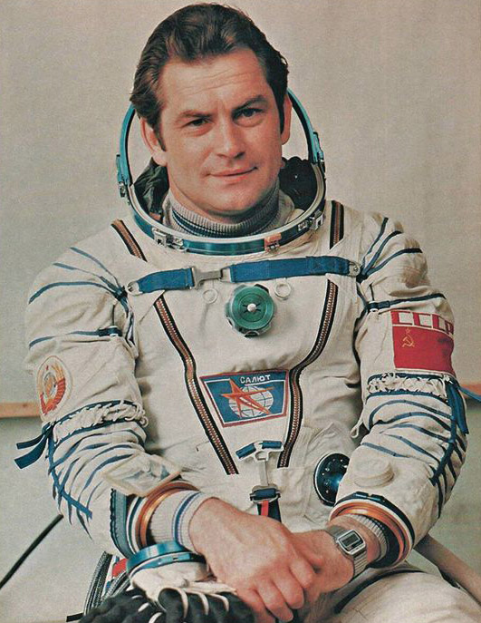
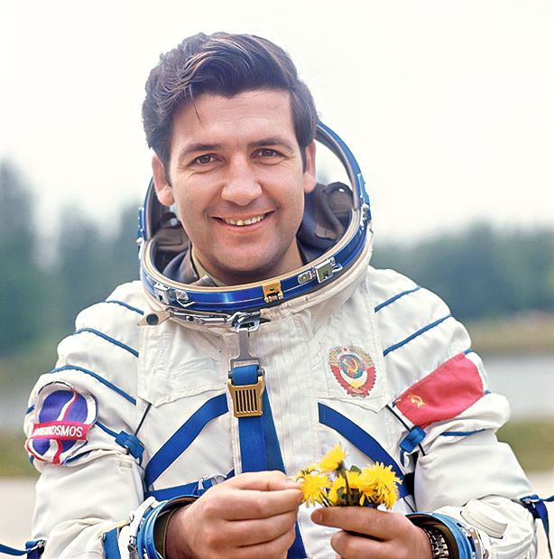
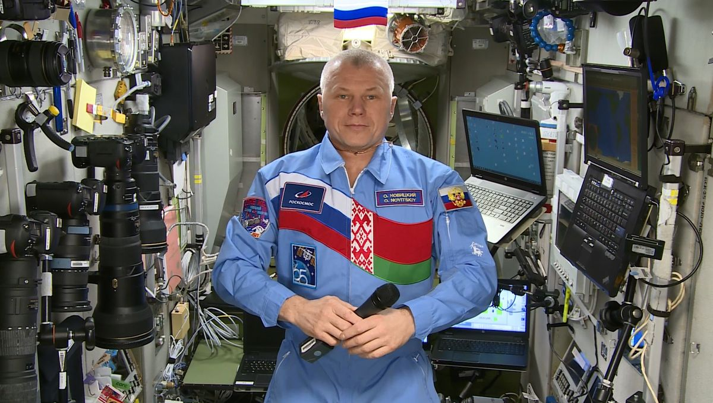

На данной странице представлен краткий обзор покорения космического пространства Республики Беларусь
-
Начало работы белорусских ученых и инженеров в рамках реализации советской космической программы
-
Петр Климук стал первым белорусом, полетевшим в космос (общая продолжи
тельность трех полетов — 78 суток)  -
Первый полет в космос совершил белорус Владимир Коваленок (общая продолжи
тельность трех полетов — 216 суток)  -
Cоздание в Беларуси Республиканского совета по космосу
-
Принят указ о создании Белорусской космической системы дистанционного зондирования Земли
-
Запуск первого белорусского космического аппарата «БелКА» (потерпел неудачу из‑за неисправности ракеты‑носителя)
-
Утверждена первая Национальная космическая программа
-
Первый космический старт уроженца Беларуси Олега Новицкого (в 2024‑м он совершает уже четвертый полет) 
-
На орбиту выведен первый отечественный спутник — Белорусский космический аппарат (БКА)
-
Беларусь принята в члены Комитета ООН по исследованию и использованию космического пространства в мирных целях
-
Образовано Агентство по космическим исследованиям НАН Беларуси
-
Запущен белорусский геостационарный спутник связи BELINTERSAT‑1
-
В Минске прошел 31‑й Международный конгресс Ассоциации участников космических полетов
-
На орбиту вышел наноспутник BSUSat ‑ 1 Белорусского государственного университета
-
В НАН Беларуси создан кластер «Научно ‑ производст
венная корпорация «Белкосмос» -
Беларусь присоединилась к совместному российско ‑ китайскому проекту строительства Международной научной лунной станции
-
Выведен на орбиту второй наноспутник BSUSat‑2 БГУ
-
Полет на МКС первой женщины ‑ космонавта из суверенной Беларуси
-
Президент Беларуси подписал Указ № 150, предусматри
вающий реализацию в 2024 — 2028 годах совместного белорусско ‑ российского проекта по развитию Белорусской космической системы дистанционного зондирования Земли